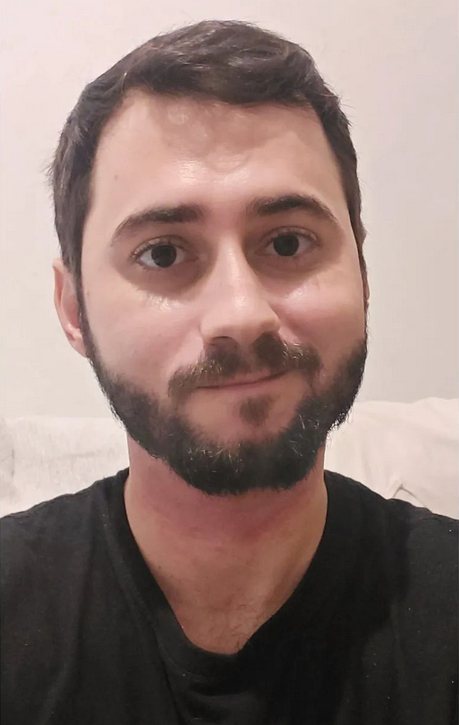

Felipe Zardo Cabral | WDD 130
Hello! My name is Felipe Zardo Cabral. I'm from Espírito Santo, Brasil. I'm part of The Church of Jesus Christ of Latter-day Saints since I was born. I always loved technology despite not having access to education of quality enough to improve in that area since young, I always loved computers and videogames, trying to understand their inner workings was always a part of me. I served my mission in Fortaleza Brazil and I love people from Fortaleza. I want to become a game developer one day. My favorite temples in Brazil are located in Fortaleza, São Paulo, and Campinas.